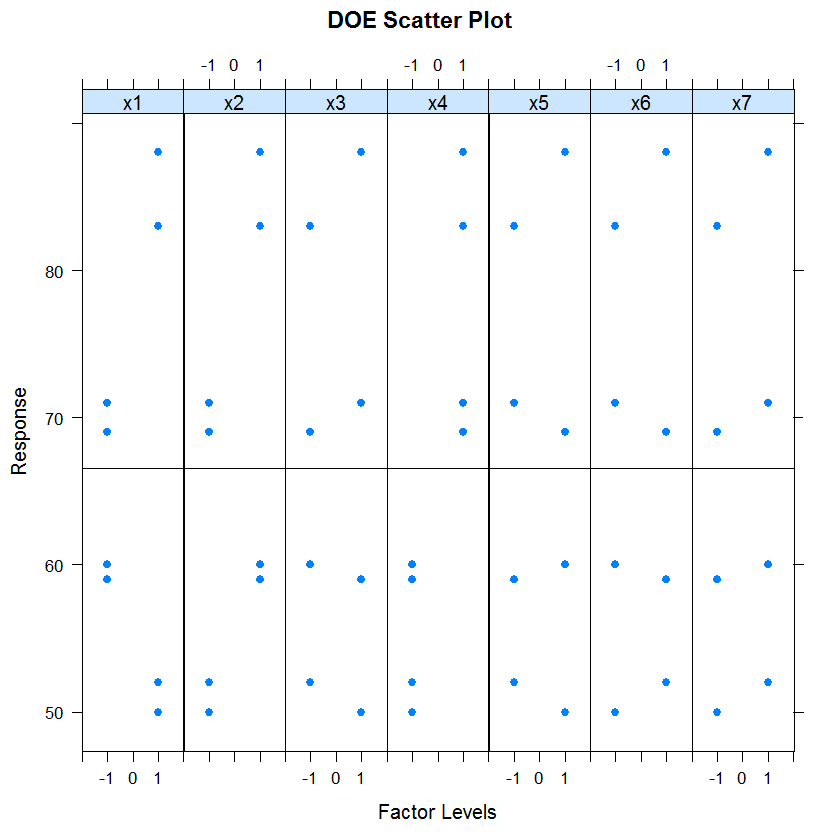
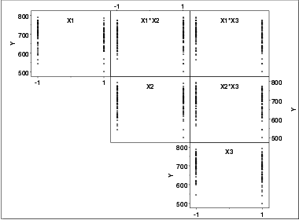

|
1.
Exploratory Data Analysis
1.3. EDA Techniques 1.3.3. Graphical Techniques: Alphabetic
|
|||
|
Purpose: Determine Important Factors with Respect to Location and Scale |
The DOE scatter plot shows the response values
for each level of each factor (i.e., independent) variable.
This graphically shows how the location and scale vary
for both within a factor variable and between different
factor variables. This graphically shows which are the
important factors and can help provide a ranked list of
important factors from a designed experiment.
The DOE scatter plot is a complement to the traditional
analyis of variance of designed experiments.
DOE scatter plots are typically used in conjunction with the DOE mean plot and the DOE standard deviation plot. The DOE mean plot replaces the raw response values with mean response values while the DOE standard deviation plot replaces the raw response values with the standard deviation of the response values. There is value in generating all 3 of these plots. The DOE mean and standard deviation plots are useful in that the summary measures of location and spread stand out (they can sometimes get lost with the raw plot). However, the raw data points can reveal subtleties, such as the presence of outliers, that might get lost with the summary statistics. |
||
|
Sample Plot: Factors 4, 2, 3, and 7 are the Important Factors. |
 | ||
| Description of the Plot |
For this sample plot, there are seven factors and each factor has
two levels. For each factor, we define a distinct x
coordinate for each level of the factor. For example, for
factor 1, level 1 is coded as 0.8 and level 2 is coded as 1.2.
The y coordinate is simply the value of the response
variable. The solid horizontal line is drawn at the overall
mean of the response variable. The vertical dotted lines are
added for clarity.
Although the plot can be drawn with an arbitrary number of levels for a factor, it is really only useful when there are two or three levels for a factor. |
||
| Conclusions |
This sample DOE scatter plot shows that:
|
||
|
Definition: Response Values Versus Factor Variables |
DOE scatter plots are formed by:
|
||
| Questions |
The DOE scatter plot can be used to answer the
following questions:
|
||
|
Importance: Identify Important Factors with Respect to Location and Scale |
The goal of many designed experiments is to determine
which factors are important with respect to location
and scale. A ranked list of the important factors is
also often of interest. DOE scatter, mean, and standard
deviation plots show this graphically. The DOE scatter
plot additionally shows if outliers may potentially be
distorting the results.
DOE scatter plots were designed primarily for analyzing designed experiments. However, they are useful for any type of multi-factor data (i.e., a response variable with two or more factor variables having a small number of distinct levels) whether or not the data were generated from a designed experiment. |
||
| Extension for Interaction Effects |
Using the concept of the scatterplot
matrix, the DOE scatter plot can be extended to display
first order interaction effects.
Specifically, if there are k factors, we create a matrix of plots with k rows and k columns. On the diagonal, the plot is simply a DOE scatter plot with a single factor. For the off-diagonal plots, we multiply the values of Xi and Xj. For the common 2-level designs (i.e., each factor has two levels) the values are typically coded as -1 and 1, so the multiplied values are also -1 and 1. We then generate a DOE scatter plot for this interaction variable. This plot is called a DOE interaction effects plot and an example is shown below. 
|
||
| Interpretation of the DOE Interaction Effects Plot |
We can first examine the diagonal elements for the main effects.
These diagonal plots show a great deal of overlap between the
levels for all three factors. This indicates that location
and scale effects will be relatively small.
We can then examine the off-diagonal plots for the first order interaction effects. For example, the plot in the first row and second column is the interaction between factors X1 and X2. As with the main effect plots, no clear patterns are evident. |
||
| Related Techniques |
DOE mean plot DOE standard deviation plot Block plot Box plot Analysis of variance |
||
| Case Study | The DOE scatter plot is demonstrated in the ceramic strength data case study. | ||
| Software | DOE scatter plots are available in some general purpose statistical software programs, although the format may vary somewhat between these programs. They are essentially just scatter plots with the X variable defined in a particular way, so it should be feasible to write macros for DOE scatter plots in most statistical software programs. | ||